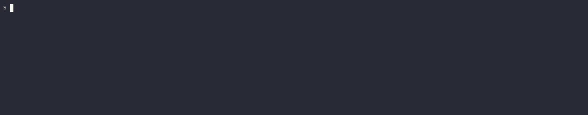

Custom Parser
Let's start by implementing a custom Parser which statically emits a single feature for execution.
Parser represents anything that emits a Stream of features.
extern crate cucumber; extern crate futures; extern crate tokio; use std::{path::PathBuf, time::Duration}; use cucumber::{World, cli, gherkin, given, parser, then, when}; use futures::{future, stream}; use tokio::time::sleep; #[derive(Debug, Default)] struct Animal { pub hungry: bool, } impl Animal { fn feed(&mut self) { self.hungry = false; } } #[derive(Debug, Default, World)] pub struct AnimalWorld { cat: Animal, } #[given(regex = r"^a (hungry|satiated) cat$")] async fn hungry_cat(world: &mut AnimalWorld, state: String) { sleep(Duration::from_secs(2)).await; match state.as_str() { "hungry" => world.cat.hungry = true, "satiated" => world.cat.hungry = false, _ => unreachable!(), } } #[when("I feed the cat")] async fn feed_cat(world: &mut AnimalWorld) { sleep(Duration::from_secs(2)).await; world.cat.feed(); } #[then("the cat is not hungry")] async fn cat_is_fed(world: &mut AnimalWorld) { sleep(Duration::from_secs(2)).await; assert!(!world.cat.hungry); } struct CustomParser; impl<I> cucumber::Parser<I> for CustomParser { type Cli = cli::Empty; // we provide no CLI options type Output = stream::Once<future::Ready<parser::Result<gherkin::Feature>>>; fn parse(self, _: I, _: Self::Cli) -> Self::Output { let keyword = "Feature"; let name = "Animal feature"; stream::once(future::ok(gherkin::Feature { keyword: keyword.into(), name: name.into(), description: None, background: None, scenarios: vec![gherkin::Scenario { keyword: "Scenario".into(), name: "If we feed a hungry cat it won't be hungry".into(), description: None, steps: vec![ gherkin::Step { keyword: "Given ".into(), ty: gherkin::StepType::Given, value: "a hungry cat".into(), docstring: None, table: None, span: gherkin::Span { start: 5, end: 18 }, position: gherkin::LineCol { line: 3, col: 5 }, }, gherkin::Step { keyword: "When ".into(), ty: gherkin::StepType::When, value: "I feed the cat".into(), docstring: None, table: None, span: gherkin::Span { start: 5, end: 19 }, position: gherkin::LineCol { line: 4, col: 5 }, }, gherkin::Step { keyword: "Then ".into(), ty: gherkin::StepType::Then, value: "the cat is not hungry".into(), docstring: None, table: None, span: gherkin::Span { start: 5, end: 26 }, position: gherkin::LineCol { line: 5, col: 5 }, }, ], examples: vec![], tags: vec![], span: gherkin::Span { start: 3, end: 52 }, position: gherkin::LineCol { line: 2, col: 3 }, }], rules: vec![], tags: vec![], span: gherkin::Span { start: 1, end: 23 }, position: gherkin::LineCol { line: 1, col: 1 }, path: Some(PathBuf::from(file!())), })) } } #[tokio::main] async fn main() { AnimalWorld::cucumber::<&str>() // aiding type inference .with_parser(CustomParser) .run_and_exit("tests/features/book") // path doesn't actually matter .await; // here due to our implementation }
